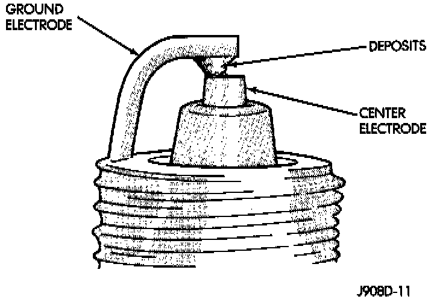

Electrode Gap Bridging
Fig. 6 Electrode Gap Bridging:

Symptoms: Gap between the electrodes bridged by deposits.
Possible Causes:
- Loose deposits in the combustion chamber can accumulate on the spark plug electrodes during continuous stop and-go driving. Then when the engine is suddenly subjected to a high torque load, the deposits partially liquefy and bridge the gap between the electrodes, short circuiting the electrodes.
NOTE: Spark plugs with electrode gap bridging can be cleaned using standard procedures.